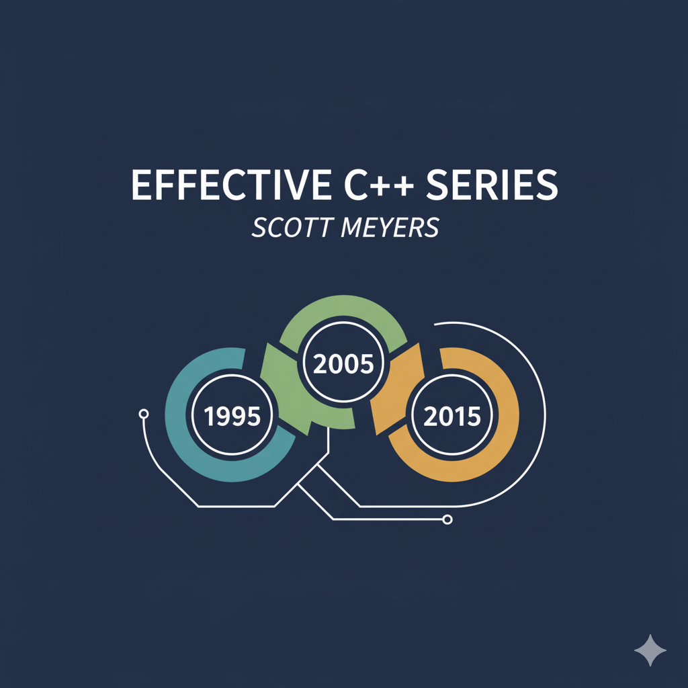

Effective C++ (2005)
Item-1: View C++ as a federation of languages
C++ encapsulates multiple programming paradigms Object Oriented, Template Metaprogramming, Functional, Generic. It is more of a federation of languages.
Item-2: Prefer const enum and inline to #define
Prefer compiler over preprocessor
Don’t
Consider the following piece of code
#define ASPECT_RATIO 1.653The issue is that the symbolic name “ASPECT RATIO” is never visible to compiler as it get replaced by the preprocessor everywhere within the code making it does not being registered on symbol table. This makes it interpret the errors during compilation as it’ll refer to 1.653 rather than ASPECT RATIO, also makes hard in symbolic debugging as there is no corresponding symbol.
Do
const double ASPECT_RATIO = 1.653;This can not only register in symbol table but also allows compiler to dispatch optimisations.
2 Special cases to consider when using const in place of #define
Constant pointers
It is advised to do a const pointer pointing to a const object i.e.
const char *const name = "Swayam"; // OR const std::string name("Swayam");Class-Specific constants
To ensure the scope of constant to a class, we need to make it a member and also to make sure there are no duplicate copies, make it
staticclass GamePlayer{ private: static const int NUM_TURNS = 5; // constant declaration int score[NUM_TURNS]; }An important point here is that the above is constant declaration (not definition). C++ requires programmer to provide the definition for anything we use, but class-specific constants that are
staticand of integral type (int, char, bool) are exception.As long as we don’t use their address, we can declare them and use them without providing a definition
The definition can be provided as follows (must need to be at the namespace scope level)
const int GamePlayer::NUM_TURNS;Not providing any value as it is being already initialized at declaration. For any other (non-integral data type) initialization at declaration time can give error (Can use
constexprto achieve that)#include<iostream> class A { private: static const double f; // constexpr static const double f = 10.9; // this also works public: void print() { std::cout << this->f << std::endl; } }; const double A::f = 10.9; // if not then get linking error that undefined reference int main() { A a = A(); a.print(); return 0; }Note that cannot use
#definefor class scoped constants, as those macros are entire lifetime unless manually being#undefnor they agree to encapsulation like private or publicThe enum trick
enumvalues are compile-time constants built into the type system, no storage needed. Consider the following code#include<iostream> class A { private: static const int NUM; int scores[NUM]; }; const int A::NUM = 10Here
NUMneeds to be known at compile time to create the array of NUM size but that is defined later in the scope. We can use the enum hack for this#include<iostream> class A { private: enum {NUM = 10}; int scores[NUM]; };This is worth knowing as
- It is more like
#definethanconst, i.e. it is legal to take the address of a const but it is not legal to take the address of an#definemacro as well as same forenum - Good compilers usually don’t allocate storage for compile time constants, unless user is access the address somewhere in code
- Other reason for worth knowing is that lots of code use this, so need to be aware.
- It is more like
Another major issue using
#definedirective is using it to implement macros that look like functions but that don’t incur the overhead of a function call.// call f with the maximum of a and b #define CALL_WITH_MAX(a, b) f((a) > (b) ? (a) : (b))This is very painful to think even, you have to remember to parenthesize all the arguments in the macro body. I prefer it doing as
template <typename T> inline void CALL_WITH_MAX(const T &a ,const T &b){ f (a > b ? a : b) }
Item-3: Use const whenever possible
const and pointers
Consider the following code
const int *p; // non-const pointer to const int data
int *const p; // const pointer to non-const int data
int const *p; // non-const pointer to const int data
const int *const p; // const pointer to const int dataRule of thumb: const applies to whatever the immediate left to it, if nothing then whatever is immediate right to it.
Function declarations
It is a good habit to keep the const constraints on the function declaration to keep the consistency with the client. Also returning a const from a function might not make sense but sometimes it can be a good habit
class Rational {...};
const Rational operator* (const Rational &lhs, const Rational &rhs);
// this can prevent the doings like
// (a*b) = c although sometimes this is what a user wants but unlikely from a user-defined typeconst Member functions
The purpose of const member functions is to operate on the const objects (they can also call by the non-const objects) but gurantees to not modify the object’s properties. The 2 variants can be overloaded to ensure the seprate functionalities
class MyVector {
private:
int* data;
size_t size;
public:
MyVector(size_t s) : size(s) {
data = new int[s];
}
// Non-const version - returns modifiable reference
int& operator[](size_t index) {
std::cout << "Non-const version called\n";
return data[index];
}
// Const version - returns read-only reference
const int& operator[](size_t index) const {
std::cout << "Const version called\n";
return data[index];
}
~MyVector() { delete[] data; }
};
int main() {
MyVector vec(5); // non-const object
const MyVector constVec(5); // const object
vec[0] = 10; // ✅ Calls non-const version, returns int&
int x = vec[0]; // ✅ Calls non-const version (but we can't modify)
int y = constVec[0]; // ✅ Calls const version, returns const int&
// constVec[0] = 20; // ❌ ILLEGAL - const version returns const int&
}There are 2 notions of defining constness
bitwise const: No member variables are modified (this is what c++ follows)
class CTextBlock { public: char& operator[](std::size_t position) const { return pText[position]; } private: char *pText; // The POINTER itself is not modified }; int main() { const CTextBlock ctb("Hello"); ctb[0] = 'J'; // ✅ Compiles! But we just modified a const object! // Now the "const" object "ctb" contains "Jello" instead of "Hello" }logical constness The object’s observable state doesn’t change (this is what violated above). There can be cases when a method cannot be bitwise const but logically it can make sense
class CTextBlock { public: ... std::size_t length() const; private: char *pText; std::size_t textLength; // last calculated length of textblock bool lengthIsValid; // whether length is currently valid }; std::size_t CTextBlock::length() const { if (!lengthIsValid) { textLength = std::strlen(pText); // error! can't assign to textLength lengthIsValid = true; // and lengthIsValid in a const } // member function return textLength; }It seems fine “logically” even for a const object but compiler won’t agree as it violates the bitwise constness. Solution is in the next subsection
mutable
mutable keyword frees the non-static data members from the constraints of bitwise constness.
class CTextBlock {
public:
...
std::size_t length() const;
private:
char *pText;
mutable std::size_t textLength; // it can vary
mutable bool lengthIsValid; // this too, even in const member functions
};
std::size_t CTextBlock::length() const
{
if (!lengthIsValid) {
textLength = std::strlen(pText); // now fine
lengthIsValid = true; // also fine
}
return textLength;
}Casting away the constness
Consider one more scenario, mutable is actually good to solve some certain mutability within const methods, but still usually we have 2 overloaded function of operator[] one returning the direct alias and other returning an const alias for const objects. Situation can comes in that both of these oeprators perform some more work like, reading data, manipulting it, some conditional checks, some logging, etc. This can lead to redundant code duplicate as both performing same thing. One solution is to one or more private methods and call them but still the calls are duplicated, so the idea what if we implement one operator[] and use it twice
It is a bad idea, but sometimes can be taken as a pinch of salt
So one might try
char& operator[](std::size_t position) {
return (*this)[position]; // ❌ INFINITE RECURSION!
// Calls itself, not the const version
}Here *this is still the same non-const object hence everytime it is going to call itself, following is the step by step understanding of right method using const_cast
// step 0: Have the const version implemented
// step 1: cast the non-const object (*this) to const
static_cast<const TextBlock&>(*this);
// step 2: now call the [] operator (should call the const version)
static_cast<const TextBlock&>(*this)[position]; // this returns `const char&`
// step 3: Remove const from returned value
const_cast<char &>(
static_cast<const TextBlock&>(*this)[position]
);
============================================================================================
// In end it should be like
const char & operator[](std::size_t position) const {
.... // preprocessing
return text[position];
}
char & operator[](std::size_t position) {
return const_cast<char &>(
static_cast<const TextBlock&>(*this)[position]
);
}Note-1: if *this is already a const object then you CANNOT do static_cast<TextBlock &>(*this); i.e. you cannot remove the constness, use const_cast for that
Note-2: having the non-const implemented and calling the const will get compiled but again, there are chances that implemented non-const can modify the properties, so always call const from a non-const
Item-4: Make sure that objects are initialized before they’re used
Its my own experience in working with different kernels and Operating Systems, please initialize after allocation, else a heisenbug will be waiting for you
Reading uninitialized values is an undefined behaviour
So there are rules that decide when object initialization is guranteed to take place and when not, but those rules are complex. So just initialize them if you are going to use them.
Difference between assignment and initialization
Consider the following code
class PhoneNumber {...};
class ABEntry {
public:
ABEntry(const std::string & name, const std::string &address, const std::list<PhoneNumber> &phones);
private:
std::string theName;
std::string theAddress;
std::list<PhoneNumber> thePhones;
int numTimesConsulted;
};
ABEntry::ABEntry(const std::string & name, const std::string &address, const std::list<PhoneNumber> &phones) {
theName = name; // all these are not initializations, they are assignments
theAddress = address;
thePhones = phones;
numTimesConsulted = 0;
}It may work with the values we expect but THIS IS NOT INITIALIZATION, IT IS ASSIGNMENT.
The rule is that, data members of an object are initialized before the body of the constructor is entered
(This isn’t true for built-in types though)
A better way is to use Member Initialization List instead of assignments, remember the initialization order must follow the declaration order of members
ABEntry::ABEntry(const std::string& name, const std::string& address,
const std::list<PhoneNumber>& phones)
: theName(name),
theAddress(address), // these are now all initializations
thePhones(phones),
numTimesConsulted(0)
{} // the ctor body is now emptyEarlier with constructor assignment, the compiler will call the default constructor and then use copy assignment operator to override the values. With Member Initialization list, all the members are initialized using the copy-constructor of corresponding objects.
We can also use the same for default constructor
ABEntry::ABEntry()
:theName(), // call theName's default ctor;
theAddress(), // do the same for theAddress;
thePhones(), // and for thePhones;
numTimesConsulted(0) // but explicitly initialize
{} // numTimesConsulted to zeroObjects like const and references must be initialized, they can’t be assigned, hence here the use of member initialization list method is a must
Order of initialization of non-local static objects defined in different translation unit
- A static object is one that exists from the time it’s constructed until the end of the program
- Stack and heap-based objects are thus excluded. Included are global objects, objects defined at namespace scope, objects declared static inside classes, objects declared static inside functions, and objects declared static at file scope
- Static objects inside functions are known as local static objects (because they’re local to a function) and the other kinds of static objects are known as non-local static objects
- Static objects are automatically destroyed when the program exits i.e destructor is called on
mainfunction exit - A translation unit is basically, source file + all of its
#includefiles
So the issue is, lets say for initialization our logic depends on the initialization of some other “non-local static object in another translation unit” then there is no way to gurantee that it is being already initialized and good to use. This is actually undefined.
// File: logger.cpp
class Logger {
public:
void log(const std::string& msg) { /* ... */ }
};
Logger globalLogger; // Non-local static object
// File: database.cpp
#include "logger.h"
extern Logger globalLogger;
class Database {
public:
Database() {
globalLogger.log("Database initialized"); // ❌ DANGER!
// What if globalLogger isn't initialized yet?
}
};
Database globalDB; // Another non-local static objectSolution? Function-Local Static Objects wrap those non-static into a function and convert them into a local-static objects, that way refer to that function and it is being guranteed to be initialized
// File: logger.cpp
class Logger {
public:
void log(const std::string& msg) { /* ... */ }
};
// Replace global static with function returning local static
Logger& getLogger() {
static Logger instance; // Local static - initialized on first call
return instance;
}
// File: database.cpp
Logger& getLogger(); // Declaration
class Database {
public:
Database() {
getLogger().log("Database initialized"); // ✅ SAFE!
// getLogger() ensures Logger is initialized before we use it
}
};
Database& getDatabase() {
static Database instance; // Local static
return instance;
}C++11 and further guarantees that Static local initialization is thread-safe
Logger& getLogger() {
static Logger instance; // ✅ Thread-safe since C++11!
return instance;
}